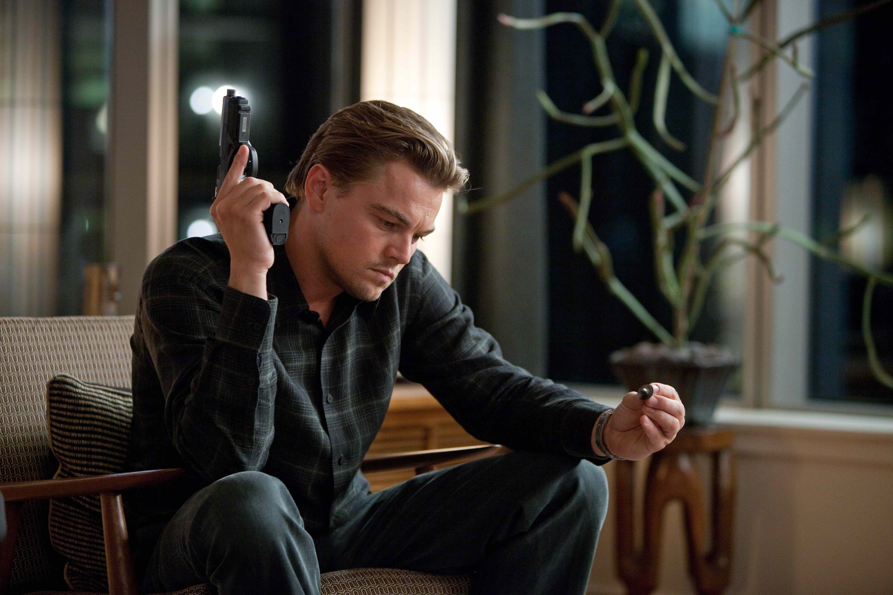
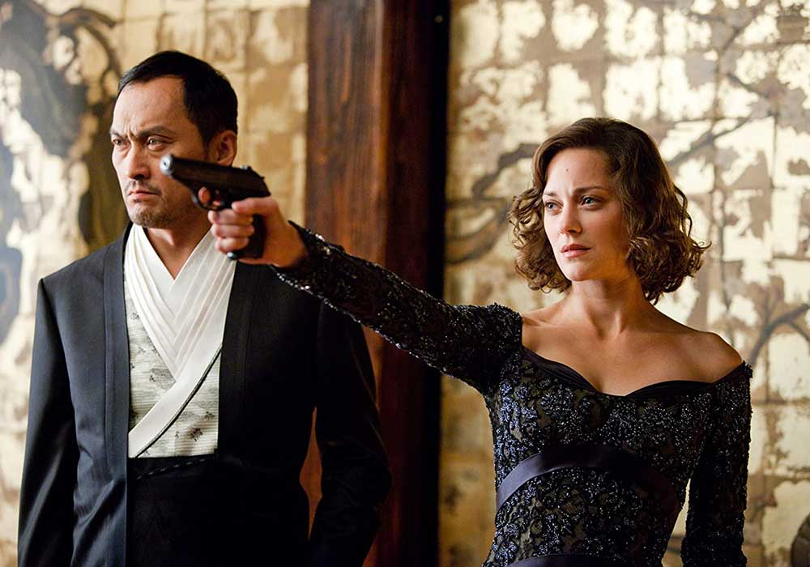
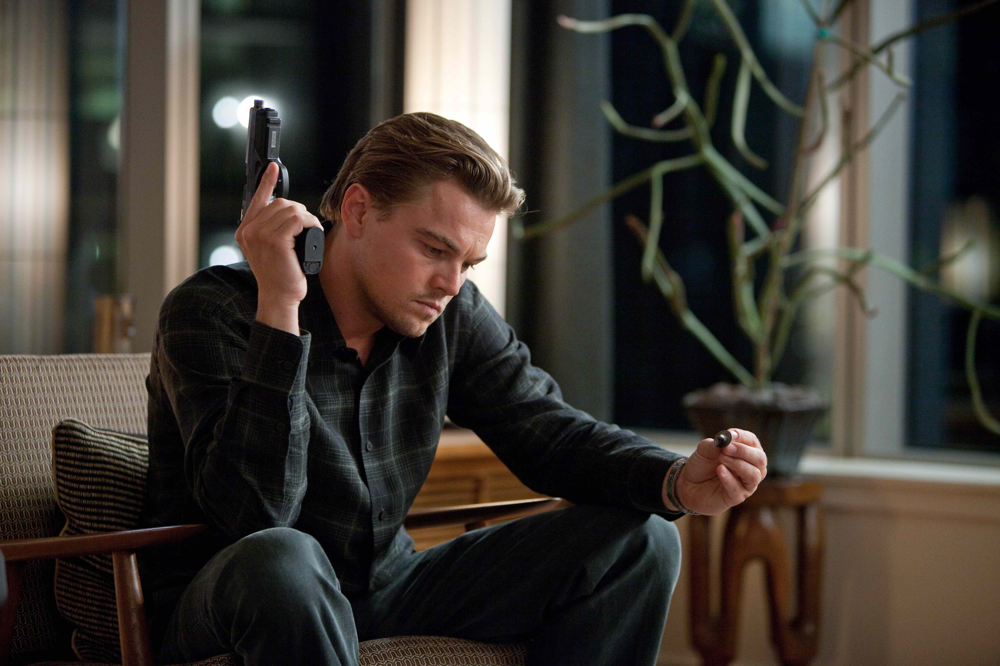
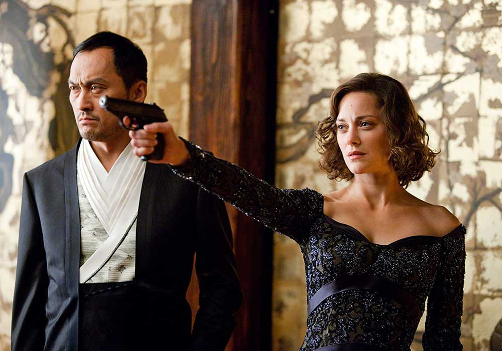
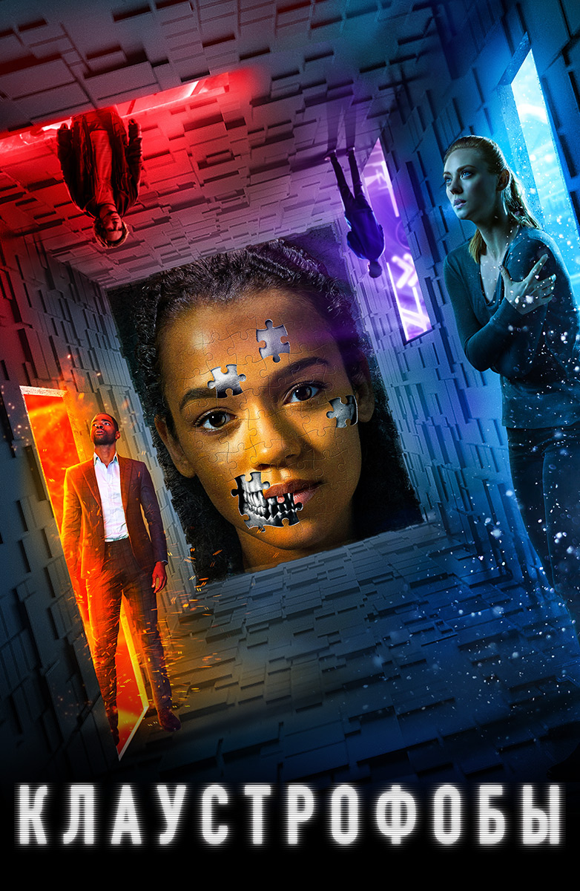
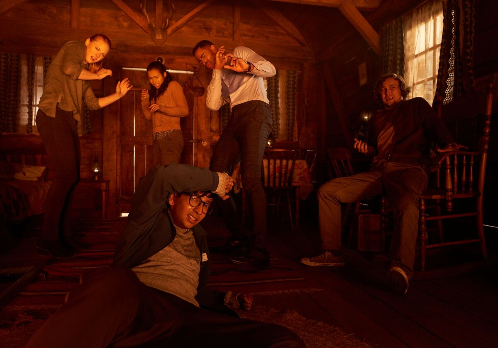
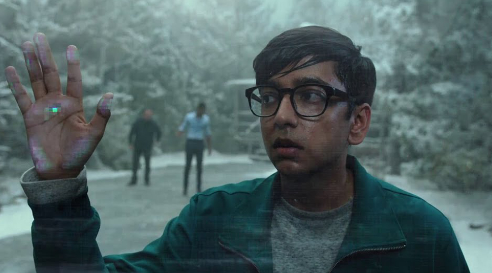
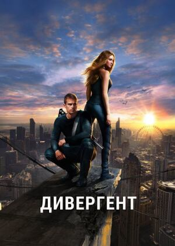
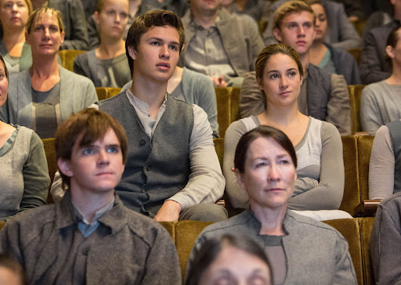
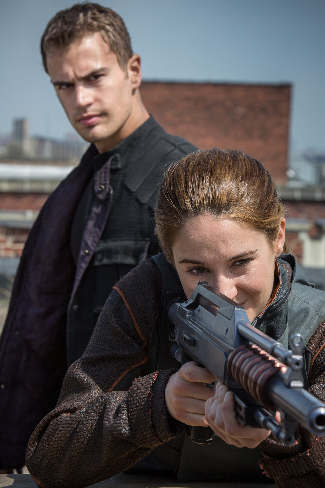

Начало
Краткое содержание фильма
Кобб — талантливый вор, лучший из лучших в опасном искусстве извлечения: он крадет ценные секреты из глубин подсознания во время сна, когда человеческий разум наиболее уязвим. Редкие способности Кобба сделали его ценным игроком в привычном к предательству мире промышленного шпионажа, но они же превратили его в извечного беглеца и лишили всего, что он когда-либо любил.
Кадры из фильма
 



О фильме
| Год | 2010 |
| Страна | USA, Great Britain |
| Жанр | Научная фантастика/Боевик |
| Режиссер | Кристофер Нолан |
Клаустрофобы
Краткое содержание фильма
Получив приглашение сыграть в квест, победитель которого получит денежное вознаграждение, шестеро прежде незнакомых между собой людей решают испытать удачу. Но вскоре становится очевидно, что их выбрали для игры не случайно, задания не такие безобидные, а ставка в игре — их собственные жизни.
Кадры из фильма
  О фильме
| Год | 2019 |
| Страна | USA |
| Жанр | Триллер |
| Режиссер | Адам Робител |
Дивергент
Краткое содержание фильма
В антиутопическом Чикаго будущего каждый человек по достижении 16 лет должен определить, к чему лежит его
душа, и в зависимости от своих личностных качеств присоединиться к одной из пяти фракций – Искренность,
Бесстрашие, Эрудиция, Дружелюбие или Отречение.
Для того, чтобы и не ошибиться с фракцией, накануне церемонии выбора подростки проходят специальное
тестирование. Юная Беатрис оказывается угрозой для всей сложившейся системы, когда тесты выявляют в ней
дивергента – человека, которого невозможно однозначно определить в одну из фракций. Способные мыслить независимо
и не питающие особого уважения к правительству, дивергенты одним своим существованием дискредитируют принципы,
на которых строится общество. И теперь Беатрис – одна из таких людей, живущих вне закона и борющихся с системой,
которая намерена любой ценой от них избавиться.
Кадры из фильма
  О фильме
| Год | 2014 |
| Страна | USA |
| Жанр | Фантастика, детектив, боевик, мелодрама |
| Режиссер | Нил Бёргер |